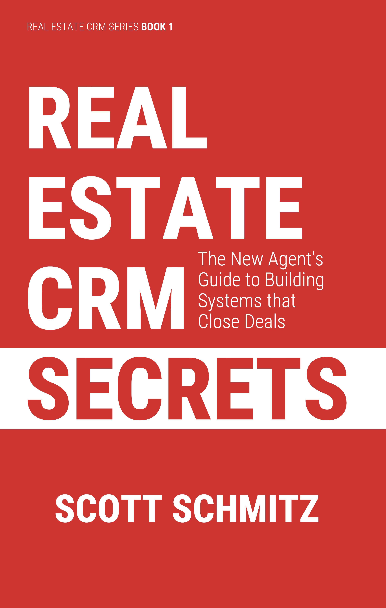

If you are looking to start your career as a real estate agent using a CRM is no longer optional. This book will teach you the benefits of using a real estate specific CRM, and how to start using one. You'll learn how to build systems to handle each step in the real estate process.
INSIDE, YOU'LL FIND:
Read the first chapter for free and see how it can transform your business.
Sample ChapterWriting this book proved more challenging than I expected, and I am deeply thankful to those who made it possible.
To my wife Michelle, thank you for your constant support.
To William Schmitz, I could never have finished this book without you. You served as researcher, editor, copywriter, publisher, and portrait artist, creating every drawing in it. You also designed the cover and contributed in countless other ways. I am forever thankful for everything you did to bring this project to life.
To Quin Leach, thank you for conducting the original interviews that shaped the case studies and providing valuable early feedback and research when the book was still in its initial stages.
To Nathan Grimm, your feedback and contributions on technical topics like email deliverability, SMS permissions, and other complex areas enhanced the work at every stage.
To Frank Larnerd, I thank you for your diagrams and for sharing your expertise in social media, content publishing, and the operation of a real estate Customer Relationship Management (CRM). Your perspective added valuable depth to the book.
I am grateful to the entire Realty Juggler Real Estate CRM Real Estate CRM team and their decades of experience in real estate CRMs. I draw upon the knowledge gained from handling countless sales and support calls over the past 20 years.
← Previous Chapter: Dedication | Next Chapter: Introduction →